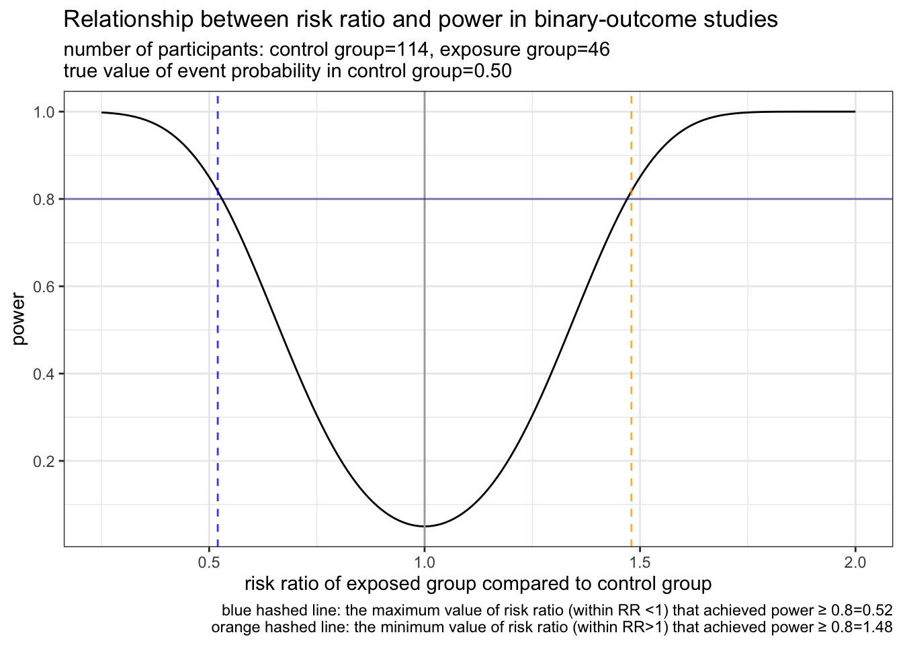

真の値がわかっている場合の、powerの分布
NOTE: これはあくまで真の値を知っているときの話であって、標本値の話ではない
pacman::p_load(pwr, tidyverse)
PlotPower_byRR <- function(n_control, n_exposed, p_event_control, rr_min = 0.25, rr_max=3.0){
# あるリスク比を定めると、powerを返す関数
GetPower_byRR<- function(risk_ratio){
res <- pwr.2p2n.test(h = ES.h(p1 = p_event_control, p2 = p_event_control*risk_ratio),
n1 = n_control,
n2 = n_exposed,
sig.level = 0.05,
alternative = "two.sided")
power <- res[["power"]]
return(power)
}
# イベント発生人数がN of participantsを超えるとエラーになるので、先に宣言しておく
rr_max <- ifelse(p_event_control*rr_max >= 1, 1/p_event_control, rr_max)
scale_riskratio <- seq(from=rr_min, to=rr_max, by=0.01)
estimate_power <- sapply(scale_riskratio, GetPower_byRR)
df <- data.frame(risk_ratio = scale_riskratio, power = estimate_power)
# RR < 1 でpower >= 0.8となる、1に近い (最大の) RRを得る
df_rr1 <- df %>%
filter(risk_ratio < 1 & power >= 0.8) %>%
arrange(power) # powerで昇順ソート
power_080_1 <- max(df_rr1$risk_ratio)
# RR > 1 でpower >= 0.8となる、1に近い (最小の) RRを得る
df_rr2 <- df %>%
filter(risk_ratio > 1 & power >= 0.80) %>%
arrange(power) # powerで昇順ソート
power_080_2 <- min(df_rr2$risk_ratio)
# description
cha1 <- sprintf("number of participants: control group=%d", n_control)
cha2 <- sprintf(", exposure group=%d\n", n_exposed)
cha3 <- sprintf("true value of event probability in control group=%.2f", p_event_control)
cha4 <- sprintf("blue hashed line: the maximum value of risk ratio (within RR <1) that achieved power ≥ 0.8=%.2f", power_080_1)
cha5 <- sprintf("\norange hashed line: the minimum value of risk ratio (within RR>1) that achieved power ≥ 0.8=%.2f", power_080_2)
subtitle = paste0(cha1, cha2, cha3)
caption = paste0(cha4, cha5)
# plot
plot <- ggplot(data = df, aes(x = risk_ratio, y = power)) +
geom_line() +
geom_vline(xintercept = 1, colour = "darkgray") +
geom_vline(xintercept = power_080_1, linetype = 2, colour = "blue", alpha=0.8) +
geom_vline(xintercept = power_080_2, linetype = 2, colour = "orange", alpha=0.8) +
geom_hline(yintercept = 0.8, colour = "navy", alpha = 0.5) +
scale_y_continuous(breaks = seq(0, 1, 0.2)) +
labs(title = "Relationship between risk ratio and power in binary-outcome studies",
subtitle = subtitle,
caption = caption) +
xlab("risk ratio of exposed group compared to control group") +
theme_bw()
return(plot)
}引数は次の通り
これらを入力すると、曝露のリスク比(横軸)に対するpower(縦軸)を返します。
PlotPower_byRR(n_control = 114, n_exposed = 46, p_event_control = 0.5)